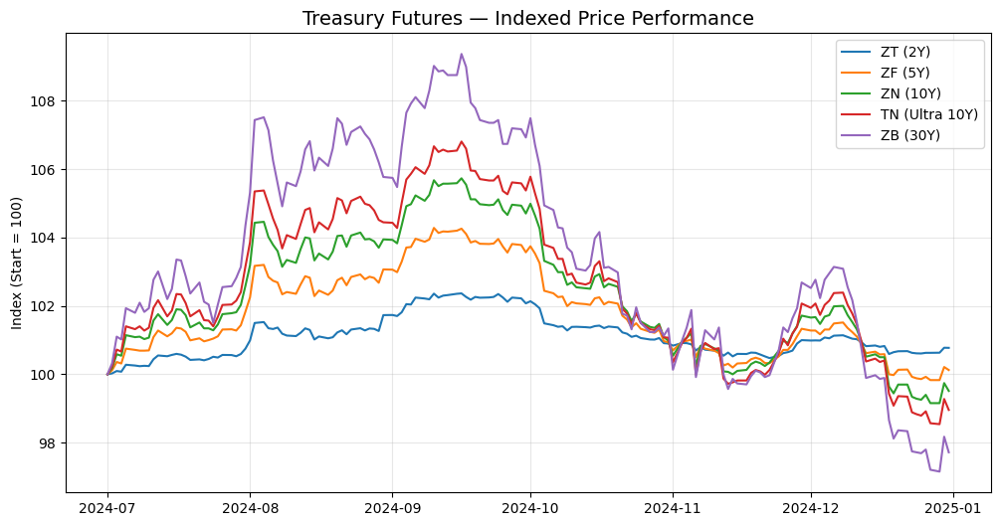
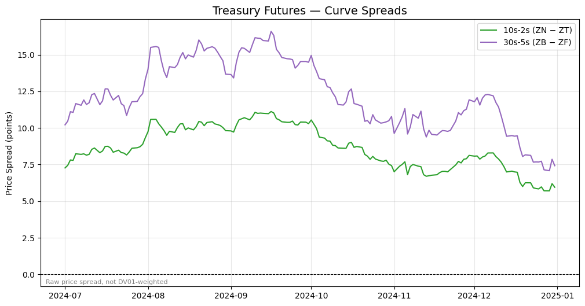
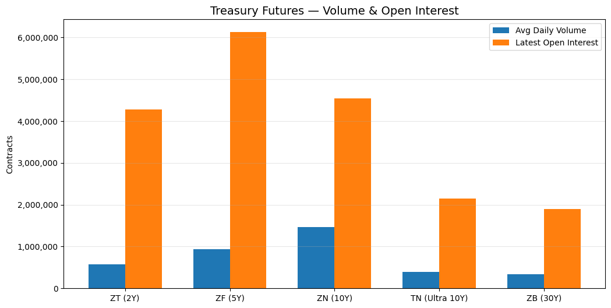
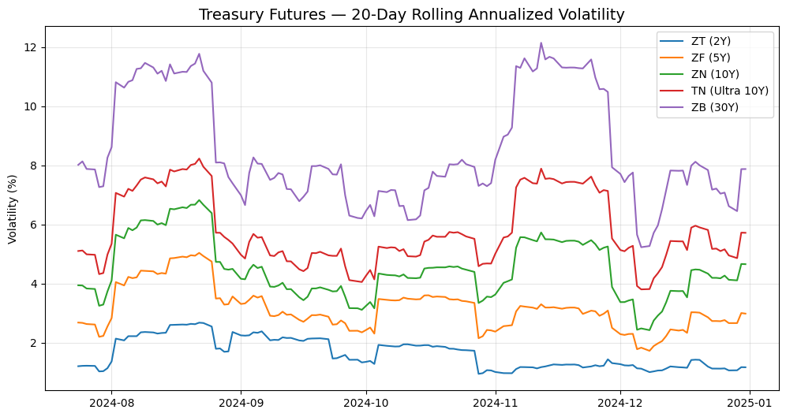

Example: Pulling Market Data From Databento#
This notebook teaches how to pull market data from
Databento while illustrating the difference between
using a Python SDK and making raw API calls (HTTP). It merges the
standalone exercises in the
databento/
directory of the in-class examples repo into a single walkthrough:
Historical SDK basics — the simplest fetch: check cost, pull trades, convert to a DataFrame
The raw HTTP API — the same query with
curl/requests, to see what the SDK abstracts awaySymbology and schemas — how Databento identifies instruments and organizes data
Treasury futures market brief — a small end-to-end application: two queries combined into four charts and a summary table
Cost warning#
Databento charges per query. The examples here keep costs negligible with
small limit= values, and the SDK sections call metadata.get_cost (free)
before fetching data, so you never spend money by accident. The market
brief in the final section downloads a few dollars’ worth of data at most,
guards against anything larger, and caches the result to Parquet so
re-running the notebook is free.
Dataset#
All examples use GLBX.MDP3 (CME Globex), which covers E-mini S&P 500 futures (ES), Treasury futures, and other CME products. Students have subscriptions to this dataset.
No live-data license#
Databento has two modes of access, and we only have the historical one:
Historical (
db.Historical()) — archived data, billed per query. This is what everything in this notebook uses.Live (
db.Live()) — real-time streaming over a persistent TCP connection, billed per subscription. Our subscription does not include this. An API key with historical access only will authenticate against the live gateway and then be rejected withBentoError: A live data license is required to access GLBX.MDP3.That message is about entitlement, not a bad key.
Setup#
Your Databento API key must be set as DATABENTO_API_KEY in the repo-root
.env file (see .env.example). We read it with the course-standard
from settings import config pattern and pass it to the client explicitly.
from pathlib import Path
from settings import config
DATA_DIR = Path(config("DATA_DIR"))
DATABENTO_API_KEY = config("DATABENTO_API_KEY")
import databento as db
client = db.Historical(key=DATABENTO_API_KEY)
1. Historical SDK Basics#
The simplest workflow has four steps:
Create a
HistoricalclientCheck the estimated cost (a free metadata call)
Fetch the data only if the cost is acceptable
Convert to a pandas DataFrame
We define the query once as a dict so the cost check and the data pull are
guaranteed to describe the same request. ES.FUT with stype_in="parent"
means “all E-mini S&P 500 futures contracts” (more on symbology in
Section 3), and limit=10 caps the number of records returned.
query = dict(
dataset="GLBX.MDP3",
symbols=["ES.FUT"],
stype_in="parent",
schema="trades",
start="2024-08-01",
end="2024-08-02",
limit=10,
)
cost = client.metadata.get_cost(**query)
print(f"Estimated cost: ${cost:.4f}")
Estimated cost: $0.0000
The guard below is the habit to build: always check the cost before fetching. This tiny query is free, so a non-zero estimate means the query is not what we intended.
if cost > 0:
raise RuntimeError(
f"Estimated cost is ${cost:.4f}, expected $0.00 — "
"review the query before fetching."
)
data = client.timeseries.get_range(**query)
# Prices are automatically scaled to floats by the SDK
df_trades_sdk = data.to_df()
df_trades_sdk
| ts_event | rtype | publisher_id | instrument_id | action | side | depth | price | size | flags | ts_in_delta | sequence | symbol | |
|---|---|---|---|---|---|---|---|---|---|---|---|---|---|
| ts_recv | |||||||||||||
| 2024-08-01 00:00:00.079196344+00:00 | 2024-08-01 00:00:00.078950957+00:00 | 0 | 1 | 118 | T | B | 0 | 5587.75 | 5 | 0 | 14913 | 45877799 | ESU4 |
| 2024-08-01 00:00:00.079236309+00:00 | 2024-08-01 00:00:00.078970329+00:00 | 0 | 1 | 118 | T | B | 0 | 5587.75 | 1 | 0 | 14376 | 45877800 | ESU4 |
| 2024-08-01 00:00:00.079349483+00:00 | 2024-08-01 00:00:00.079156215+00:00 | 0 | 1 | 118 | T | B | 0 | 5587.75 | 1 | 0 | 14712 | 45877801 | ESU4 |
| 2024-08-01 00:00:00.079868759+00:00 | 2024-08-01 00:00:00.079685131+00:00 | 0 | 1 | 118 | T | B | 0 | 5587.75 | 1 | 0 | 14558 | 45877816 | ESU4 |
| 2024-08-01 00:00:00.094556955+00:00 | 2024-08-01 00:00:00.094305073+00:00 | 0 | 1 | 118 | T | A | 0 | 5587.75 | 1 | 0 | 15096 | 45877890 | ESU4 |
| 2024-08-01 00:00:00.123901714+00:00 | 2024-08-01 00:00:00.123669805+00:00 | 0 | 1 | 118 | T | A | 0 | 5587.75 | 1 | 0 | 14589 | 45877906 | ESU4 |
| 2024-08-01 00:00:00.211571140+00:00 | 2024-08-01 00:00:00.211326531+00:00 | 0 | 1 | 118 | T | A | 0 | 5587.75 | 2 | 0 | 14989 | 45877936 | ESU4 |
| 2024-08-01 00:00:00.211785774+00:00 | 2024-08-01 00:00:00.211514531+00:00 | 0 | 1 | 118 | T | A | 0 | 5587.75 | 7 | 0 | 14566 | 45877938 | ESU4 |
| 2024-08-01 00:00:00.291190144+00:00 | 2024-08-01 00:00:00.290962393+00:00 | 0 | 1 | 118 | T | A | 0 | 5587.50 | 1 | 0 | 14715 | 45877987 | ESU4 |
| 2024-08-01 00:00:00.589283254+00:00 | 2024-08-01 00:00:00.589059835+00:00 | 0 | 1 | 118 | T | A | 0 | 5587.50 | 2 | 0 | 14783 | 45878033 | ESU4 |
Each row is one trade: the index is the exchange receive timestamp
(ts_recv), price is already in dollars, size is the number of
contracts, and side is the aggressor side (B = buyer initiated,
A = seller initiated). Notice the SDK also mapped the numeric
instrument_id back to the human-readable contract ticker in symbol.
2. The Raw HTTP API#
The SDK is a thin layer over a REST API. The same query as Section 1 can be
made with curl:
# HTTP Basic Auth: API key is the username, password is empty.
# The -u flag sets the Authorization header: base64(key:)
curl -s \
-u "${DATABENTO_API_KEY}:" \
-X POST \
"https://hist.databento.com/v0/timeseries.get_range" \
-d "dataset=GLBX.MDP3" \
-d "symbols=ES.FUT" \
-d "stype_in=parent" \
-d "schema=trades" \
-d "start=2024-08-01" \
-d "end=2024-08-02" \
-d "encoding=json" \
-d "limit=10"
curl flags explained#
Flag |
Meaning |
|---|---|
|
Silent mode. Suppresses the progress bar so you only see the response body. |
|
HTTP Basic Auth. The API key is the username; the trailing colon means the password is empty. curl base64-encodes |
|
HTTP method. Specifies the request method (see below). |
|
Data / form field. Sends a key-value pair in the request body as |
HTTP methods#
Every HTTP request includes a method (or “verb”) that tells the server what kind of operation you intend:
Method |
Purpose |
Body? |
Example |
|---|---|---|---|
|
Read a resource. What your browser sends when you visit a URL. Parameters go in the query string ( |
No |
|
|
Send data to the server to create or query something. Parameters go in the request body. |
Yes |
|
|
Replace a resource entirely with new data. |
Yes |
|
|
Partially update a resource (only the fields you send). |
Yes |
|
|
Remove a resource. |
Rarely |
|
Why POST here? Databento’s query has many parameters (dataset, symbols, date range, schema, …). Packing all of that into a URL query string would be unwieldy, so the API uses POST with form-encoded body fields. This is a common pattern for “read” endpoints that take complex inputs.
The same request from Python#
requests.post is the Python equivalent of the curl command. We run the
same query (with limit=5) and look at the raw response before any SDK
processing.
import json
import requests
response = requests.post(
"https://hist.databento.com/v0/timeseries.get_range",
auth=(DATABENTO_API_KEY, ""), # HTTP Basic Auth: key as username, empty password
data={
"dataset": "GLBX.MDP3",
"symbols": "ES.FUT",
"stype_in": "parent",
"schema": "trades",
"start": "2024-08-01",
"end": "2024-08-02",
"encoding": "json",
"limit": 5,
},
)
response.raise_for_status()
# The response is newline-delimited JSON (one record per line)
lines = response.text.strip().split("\n")
print(json.dumps(json.loads(lines[0]), indent=2))
{
"ts_recv": "1722470400079196344",
"hd": {
"ts_event": "1722470400078950957",
"rtype": 0,
"publisher_id": 1,
"instrument_id": 118
},
"action": "T",
"side": "B",
"depth": 0,
"price": "5587750000000",
"size": 5,
"flags": 0,
"ts_in_delta": 14913,
"sequence": 45877799
}
Reading the raw record#
Field |
Example |
Meaning |
|---|---|---|
|
|
Exchange receive timestamp (nanoseconds since Unix epoch) |
|
|
Matching-engine event timestamp (ns) |
|
|
Record type: |
|
|
Venue ID ( |
|
|
Numeric instrument ID for this contract |
|
|
Message action: |
|
|
Aggressor side: |
|
|
Fixed-point integer — multiply by 1e-9 → $5,587.75 |
|
|
Number of contracts traded |
|
|
Capture latency: |
|
|
Exchange sequence number (detect gaps / ordering) |
Two gotchas in the raw JSON that the SDK hides from you:
64-bit integers are encoded as strings (
"5587750000000"), because JSON numbers are doubles and would lose precision. Cast withint()first.ts_eventlives in the record header (hd), not at the top level. Onlyts_recvis top-level.
Databento stores prices as fixed-point integers to avoid floating-point rounding: divide by 1e9 to get dollars.
for line in lines:
record = json.loads(line)
raw_price = int(record["price"]) # arrives as a string!
actual_price = raw_price * 1e-9 # fixed-point -> dollars
ts_event = record["hd"]["ts_event"]
print(f"ts={ts_event} price={raw_price} (raw) -> ${actual_price:.2f}")
ts=1722470400078950957 price=5587750000000 (raw) -> $5587.75
ts=1722470400078970329 price=5587750000000 (raw) -> $5587.75
ts=1722470400079156215 price=5587750000000 (raw) -> $5587.75
ts=1722470400079685131 price=5587750000000 (raw) -> $5587.75
ts=1722470400094305073 price=5587750000000 (raw) -> $5587.75
SDK vs API — what’s the difference?#
SDK ( |
Raw API (curl / |
|
|---|---|---|
Auth |
Pass key to constructor or set env var |
HTTP Basic Auth |
Data format |
Auto-decoded to DataFrames |
Raw JSON or binary DBN |
Price scaling |
Automatic (human-readable floats) |
Raw fixed-point integers (multiply by 1e-9) |
Integer encoding |
Native Python |
JSON encodes 64-bit ints as strings |
Error handling |
Python exceptions |
HTTP status codes |
You’ll normally use the SDK — but when it misbehaves, knowing the protocol underneath is what lets you debug it.
3. Symbology: Four Ways to Name an Instrument#
The same underlying product (the E-mini S&P 500 future) can be referenced in four different ways, depending on your use case:
Type |
Example |
Use case |
|---|---|---|
|
|
Specific contract by exchange ticker |
|
|
All contracts for a product (e.g., all ES futures) |
|
|
Front-month (rolling), no manual roll management |
|
|
Numeric ID from the exchange, most compact |
Reading a raw_symbol#
CME futures tickers follow the format Root + Month Code + Year Digit.
For example, ESU4 = ES (E-mini S&P 500) + U (September) + 4
(2024).
F |
G |
H |
J |
K |
M |
N |
Q |
U |
V |
X |
Z |
|---|---|---|---|---|---|---|---|---|---|---|---|
Jan |
Feb |
Mar |
Apr |
May |
Jun |
Jul |
Aug |
Sep |
Oct |
Nov |
Dec |
ES futures trade on a quarterly cycle, so you’ll only see H (Mar), M (Jun), U (Sep), Z (Dec).
Reading a parent symbol#
Format: Root.AssetClass. ES.FUT = all E-mini S&P 500 futures
(outrights and spreads); ES.OPT = all E-mini S&P 500 options.
Reading a continuous symbol#
Format: Root.Rule.Rank, where Rule selects the roll method
(c = calendar / nearest expiry, v = volume, n = open interest) and
Rank selects which contract (0 = front month, 1 = second nearest,
…). Examples: ES.c.0 = front-month ES by expiry date; ES.v.0 =
most-traded ES contract by volume.
instrument_id#
Numeric IDs assigned by the exchange. Compact but less portable — some venues remap IDs daily.
Let’s see parent and raw_symbol side by side. First, ES.FUT returns
trades from all active ES contracts:
data_parent = client.timeseries.get_range(
dataset="GLBX.MDP3",
symbols=["ES.FUT"],
stype_in="parent",
schema="trades",
start="2024-08-01",
end="2024-08-02",
limit=5,
)
df_parent = data_parent.to_df()
df_parent[["symbol", "price", "size"]]
| symbol | price | size | |
|---|---|---|---|
| ts_recv | |||
| 2024-08-01 00:00:00.079196344+00:00 | ESU4 | 5587.75 | 5 |
| 2024-08-01 00:00:00.079236309+00:00 | ESU4 | 5587.75 | 1 |
| 2024-08-01 00:00:00.079349483+00:00 | ESU4 | 5587.75 | 1 |
| 2024-08-01 00:00:00.079868759+00:00 | ESU4 | 5587.75 | 1 |
| 2024-08-01 00:00:00.094556955+00:00 | ESU4 | 5587.75 | 1 |
Then ESU4 with stype_in="raw_symbol" returns trades from one
specific contract (September 2024):
data_raw = client.timeseries.get_range(
dataset="GLBX.MDP3",
symbols=["ESU4"],
stype_in="raw_symbol",
schema="trades",
start="2024-08-01",
end="2024-08-02",
limit=5,
)
df_raw = data_raw.to_df()
df_raw[["symbol", "price", "size"]]
| symbol | price | size | |
|---|---|---|---|
| ts_recv | |||
| 2024-08-01 00:00:00.079196344+00:00 | ESU4 | 5587.75 | 5 |
| 2024-08-01 00:00:00.079236309+00:00 | ESU4 | 5587.75 | 1 |
| 2024-08-01 00:00:00.079349483+00:00 | ESU4 | 5587.75 | 1 |
| 2024-08-01 00:00:00.079868759+00:00 | ESU4 | 5587.75 | 1 |
| 2024-08-01 00:00:00.094556955+00:00 | ESU4 | 5587.75 | 1 |
Rules of thumb:
parentis the most convenient for “all ES futures” without knowing specific tickerscontinuousis ideal for backtesting — it handles contract rolls automaticallyraw_symbolis what you’d use on a trading desk (a specific contract)
4. Schemas: How Granular Is the Data?#
A schema is the shape of the records you get back. They form a hierarchy from full order-book detail down to daily bars:
Most granular Least granular
| |
v v
mbo → mbp-10 → mbp-1 → trades → ohlcv-1s → ohlcv-1m → ohlcv-1d
(L3 book) (L2 depth) (L1 top) (last sale) (1s bars) (1m bars) (daily)
More granular = more data = higher cost. Use the coarsest schema that meets your needs. Here we fetch the same 30-minute window at three levels of granularity.
PARAMS = dict(
dataset="GLBX.MDP3",
symbols=["ES.FUT"],
stype_in="parent",
start="2024-08-01T14:30:00", # 30 min window during market hours
end="2024-08-01T15:00:00",
limit=10,
)
df_schema_trades = client.timeseries.get_range(schema="trades", **PARAMS).to_df()
df_schema_trades[["symbol", "price", "size"]]
| symbol | price | size | |
|---|---|---|---|
| ts_recv | |||
| 2024-08-01 14:30:00.002504512+00:00 | ESU4 | 5550.5 | 1 |
| 2024-08-01 14:30:00.009743452+00:00 | ESU4 | 5550.5 | 2 |
| 2024-08-01 14:30:00.009937551+00:00 | ESU4 | 5550.5 | 5 |
| 2024-08-01 14:30:00.010159425+00:00 | ESU4 | 5550.5 | 24 |
| 2024-08-01 14:30:00.010519155+00:00 | ESU4 | 5550.5 | 1 |
| 2024-08-01 14:30:00.010560969+00:00 | ESU4 | 5550.5 | 1 |
| 2024-08-01 14:30:00.010803036+00:00 | ESU4 | 5550.5 | 4 |
| 2024-08-01 14:30:00.010950754+00:00 | ESU4 | 5550.5 | 2 |
| 2024-08-01 14:30:00.011308309+00:00 | ESU4 | 5550.5 | 5 |
| 2024-08-01 14:30:00.011697499+00:00 | ESU4 | 5550.5 | 1 |
The trades schema returned 10 individual ticks covering barely a second
of trading. One-second bars summarize each second as an
open/high/low/close/volume row:
df_schema_1s = client.timeseries.get_range(schema="ohlcv-1s", **PARAMS).to_df()
df_schema_1s[["symbol", "open", "high", "low", "close", "volume"]]
| symbol | open | high | low | close | volume | |
|---|---|---|---|---|---|---|
| ts_event | ||||||
| 2024-08-01 14:30:00+00:00 | ESU4 | 5550.50 | 5550.75 | 5549.75 | 5550.00 | 430 |
| 2024-08-01 14:30:01+00:00 | ESU4 | 5550.25 | 5550.25 | 5549.25 | 5549.75 | 262 |
| 2024-08-01 14:30:02+00:00 | ESU4 | 5549.50 | 5549.75 | 5549.00 | 5549.25 | 293 |
| 2024-08-01 14:30:03+00:00 | ESU4 | 5549.50 | 5550.25 | 5549.25 | 5550.25 | 296 |
| 2024-08-01 14:30:04+00:00 | ESU4 | 5550.00 | 5551.00 | 5549.75 | 5551.00 | 285 |
| 2024-08-01 14:30:05+00:00 | ESU4 | 5550.75 | 5551.50 | 5550.75 | 5551.50 | 187 |
| 2024-08-01 14:30:06+00:00 | ESU4 | 5551.50 | 5552.00 | 5551.25 | 5551.75 | 170 |
| 2024-08-01 14:30:07+00:00 | ESU4 | 5551.75 | 5552.25 | 5551.50 | 5552.00 | 118 |
| 2024-08-01 14:30:08+00:00 | ESU4 | 5551.75 | 5552.00 | 5551.50 | 5551.50 | 276 |
| 2024-08-01 14:30:09+00:00 | ESU4 | 5551.50 | 5551.50 | 5551.00 | 5551.00 | 39 |
And one-minute bars cover the same window in far fewer rows:
df_schema_1m = client.timeseries.get_range(schema="ohlcv-1m", **PARAMS).to_df()
df_schema_1m[["symbol", "open", "high", "low", "close", "volume"]]
| symbol | open | high | low | close | volume | |
|---|---|---|---|---|---|---|
| ts_event | ||||||
| 2024-08-01 14:30:00+00:00 | ESU4 | 5550.50 | 5554.50 | 5549.00 | 5553.75 | 7585 |
| 2024-08-01 14:30:00+00:00 | ESU4-ESZ4 | 61.15 | 61.15 | 61.15 | 61.15 | 1 |
| 2024-08-01 14:31:00+00:00 | ESU4-ESZ4 | 61.05 | 61.05 | 61.05 | 61.05 | 1 |
| 2024-08-01 14:31:00+00:00 | ESU4 | 5553.75 | 5554.50 | 5546.75 | 5548.00 | 7720 |
| 2024-08-01 14:32:00+00:00 | ESZ4-ESH5 | 56.60 | 56.60 | 56.60 | 56.60 | 5 |
| 2024-08-01 14:32:00+00:00 | ESH5 | 5665.75 | 5665.75 | 5665.75 | 5665.75 | 1 |
| 2024-08-01 14:32:00+00:00 | ESU4-ESZ4 | 61.05 | 61.05 | 61.05 | 61.05 | 1 |
| 2024-08-01 14:32:00+00:00 | ESZ4 | 5608.00 | 5608.00 | 5606.00 | 5606.00 | 3 |
| 2024-08-01 14:32:00+00:00 | ESU4 | 5548.00 | 5549.75 | 5543.50 | 5544.00 | 9799 |
| 2024-08-01 14:33:00+00:00 | ESU4 | 5544.00 | 5545.75 | 5541.50 | 5545.50 | 8819 |
For most research, start with ohlcv-1m or trades; only reach for
mbo/mbp-10 if you actually need order-book depth.
5. Application: A Treasury Futures Market Brief#
Now a small end-to-end example: a market brief for Treasury futures across the yield curve, combining two Databento queries into four charts and a summary table.
Symbol |
Product |
Tenor |
|---|---|---|
ZT |
2-Year T-Note |
2Y |
ZF |
5-Year T-Note |
5Y |
ZN |
10-Year T-Note |
10Y |
TN |
Ultra 10-Year T-Note |
Ultra 10Y |
ZB |
30-Year T-Bond |
30Y |
We make two queries:
Daily OHLCV bars using continuous contracts — clean price series that roll automatically
Statistics (open interest) using parent symbology — aggregate activity across all expirations
Why .v.0 and not .c.0?#
We use ZN.v.0 (roll by volume), not ZN.c.0 (roll by calendar).
The distinction matters a lot for Treasury futures: .c.0 rolls only when
the front contract expires, and ZT/ZF stay listed through the end of their
delivery month — so .c.0 keeps pointing at a contract that everyone has
already rolled out of, and daily volume collapses to double digits for
weeks at a time. .v.0 rolls when volume migrates to the next expiration,
which is what a market brief actually wants.
import numpy as np
import pandas as pd
DATASET = "GLBX.MDP3"
PRODUCTS = ["ZT", "ZF", "ZN", "TN", "ZB"]
TENORS = {"ZT": "2Y", "ZF": "5Y", "ZN": "10Y", "TN": "Ultra 10Y", "ZB": "30Y"}
COLORS = {
"ZT": "#1f77b4",
"ZF": "#ff7f0e",
"ZN": "#2ca02c",
"TN": "#d62728",
"ZB": "#9467bd",
}
# Continuous front-month symbols for daily OHLCV (roll by volume)
OHLCV_SYMBOLS = ["ZT.v.0", "ZF.v.0", "ZN.v.0", "TN.v.0", "ZB.v.0"]
# Parent symbols for statistics (open interest across all expirations)
STATS_SYMBOLS = ["ZT.FUT", "ZF.FUT", "ZN.FUT", "TN.FUT", "ZB.FUT"]
START = "2024-07-01"
END = "2025-01-01"
# Parent symbology x statistics schema is very large over long windows, so
# the statistics query only covers the last few days of the window.
STATS_START = (pd.Timestamp(END) - pd.Timedelta(days=5)).strftime("%Y-%m-%d")
Fetch once, cache to Parquet#
This is the only section of the notebook that downloads a meaningful amount of data (a few dollars at most). To avoid re-paying every time the notebook runs, we cache both query results as Parquet files under the repo’s data directory and skip the API entirely when the cache exists. Delete the files to force a fresh download.
DATABENTO_DATA_DIR = DATA_DIR / "databento"
DATABENTO_DATA_DIR.mkdir(parents=True, exist_ok=True)
ohlcv_path = DATABENTO_DATA_DIR / "ohlcv_daily.parquet"
oi_path = DATABENTO_DATA_DIR / "open_interest.parquet"
use_cache = ohlcv_path.exists() and oi_path.exists()
print(f"Using cached Parquet files: {use_cache}")
Using cached Parquet files: True
On a fresh fetch we first estimate the cost of both queries (free metadata calls) and stop if the total looks wrong — the same habit as Section 1, with a higher tolerance because this data genuinely costs a little money.
if not use_cache:
ohlcv_cost = client.metadata.get_cost(
dataset=DATASET,
symbols=OHLCV_SYMBOLS,
stype_in="continuous",
schema="ohlcv-1d",
start=START,
end=END,
)
stats_cost = client.metadata.get_cost(
dataset=DATASET,
symbols=STATS_SYMBOLS,
stype_in="parent",
schema="statistics",
start=STATS_START,
end=END,
)
total_cost = ohlcv_cost + stats_cost
print(f"OHLCV daily: ${ohlcv_cost:.4f}")
print(f"Statistics: ${stats_cost:.4f}")
print(f"Total: ${total_cost:.4f}")
if total_cost > 5.0:
raise RuntimeError(
f"Total cost ${total_cost:.4f} exceeds $5.00 — review before proceeding."
)
ohlcv_data = client.timeseries.get_range(
dataset=DATASET,
symbols=OHLCV_SYMBOLS,
stype_in="continuous",
schema="ohlcv-1d",
start=START,
end=END,
)
ohlcv_data.to_df().to_parquet(ohlcv_path)
print(f"Saved {ohlcv_path.name}")
Open interest via the statistics schema — and a data-cleaning lesson#
The statistics schema carries exchange-published figures (settlement
prices, volume summaries, open interest, …) distinguished by stat_type.
Open interest is stat_type == 9
(docs).
Getting from raw statistics records to a clean daily series takes three
steps:
Filter to
stat_type == 9— the schema mixes many statistic types.Drop calendar spreads (symbols like
ZNH5-ZNM5) — we want outright contracts only.Deduplicate before aggregating. CME publishes open interest for a given trade date twice: a preliminary figure shortly after the close, then a final figure the next morning. Both arrive as separate records with the same
ts_ref(the trade date the statistic describes). Summing them naively double-counts — the 10-Year would show ~9.1M contracts when the true figure is ~4.5M. The fix: group by (contract,ts_ref) and keep the record that arrived last, which is the final revision.
if not use_cache:
stats_data = client.timeseries.get_range(
dataset=DATASET,
symbols=STATS_SYMBOLS,
stype_in="parent",
schema="statistics",
start=STATS_START,
end=END,
)
df_stats = stats_data.to_df()
print(f"Raw statistics records: {len(df_stats)}")
# Step 1: open interest only
df_oi_raw = df_stats[df_stats["stat_type"] == 9].copy()
# Step 2: outright contracts only
df_oi_raw = df_oi_raw[~df_oi_raw["symbol"].str.contains("-")]
# Step 3: keep the final revision per (contract, trade date)
df_oi_raw = df_oi_raw.sort_index() # ts_recv ascending
df_oi_raw = df_oi_raw.groupby(["symbol", "ts_ref"], as_index=False).last()
# The statistic describes ts_ref (the trade date), not when we received it
df_oi_raw["date"] = (
pd.to_datetime(df_oi_raw["ts_ref"]).dt.normalize().dt.tz_localize(None)
)
# Extract product root ("ZNH5" -> "ZN") and aggregate across expirations
df_oi_raw["product"] = df_oi_raw["symbol"].str.extract(r"^([A-Z]{2})")
df_oi_agg = (
df_oi_raw.groupby(["date", "product"])["quantity"].sum().reset_index()
)
df_oi_agg.columns = ["date", "product", "open_interest"]
df_oi_agg.to_parquet(oi_path, index=False)
print(f"Saved {oi_path.name}")
From here on everything reads from the local Parquet files, so the analysis below runs identically whether the data was just fetched or loaded from cache.
df_ohlcv = pd.read_parquet(ohlcv_path)
df_oi = pd.read_parquet(oi_path)
# Extract product root from symbol (e.g., "ZN.v.0" -> "ZN")
df_ohlcv["product"] = df_ohlcv["symbol"].str.split(".").str[0]
df_ohlcv["date"] = pd.to_datetime(df_ohlcv.index)
# Pivot to wide format (date x product), in curve order
close = df_ohlcv.pivot_table(index="date", columns="product", values="close")
volume = df_ohlcv.pivot_table(index="date", columns="product", values="volume")
close = close[[p for p in PRODUCTS if p in close.columns]]
volume = volume[[p for p in PRODUCTS if p in volume.columns]]
close.tail()
| product | ZT | ZF | ZN | TN | ZB |
|---|---|---|---|---|---|
| date | |||||
| 2024-12-26 00:00:00+00:00 | 102.667969 | 106.117188 | 108.640625 | 111.250000 | 113.84375 |
| 2024-12-27 00:00:00+00:00 | 102.667969 | 106.015625 | 108.375000 | 110.859375 | 113.15625 |
| 2024-12-29 00:00:00+00:00 | 102.671875 | 106.015625 | 108.375000 | 110.828125 | 113.09375 |
| 2024-12-30 00:00:00+00:00 | 102.820312 | 106.421875 | 109.015625 | 111.656250 | 114.28125 |
| 2024-12-31 00:00:00+00:00 | 102.816406 | 106.328125 | 108.765625 | 111.296875 | 113.75000 |
Chart 1: Indexed price performance#
Normalizing every series to 100 at the start of the window makes the relative moves across tenors comparable even though the contracts trade at very different price levels.
import matplotlib.pyplot as plt
fig, ax = plt.subplots(figsize=(12, 6))
indexed = close / close.iloc[0] * 100
for prod in indexed.columns:
ax.plot(
indexed.index,
indexed[prod],
label=f"{prod} ({TENORS[prod]})",
color=COLORS[prod],
linewidth=1.5,
)
ax.set_title("Treasury Futures — Indexed Price Performance", fontsize=14)
ax.set_ylabel("Index (Start = 100)")
ax.legend(loc="best")
ax.grid(True, alpha=0.3)
plt.show()

Chart 2: Curve spreads#
Long-tenor minus short-tenor price spreads (10s-2s, 30s-5s) as a rough steepening/flattening gauge. These are raw price spreads, not DV01-weighted, so read them as direction rather than magnitude.
fig, ax = plt.subplots(figsize=(12, 6))
spread_10s2s = close["ZN"] - close["ZT"]
ax.plot(
spread_10s2s.index,
spread_10s2s,
label="10s-2s (ZN − ZT)",
color="#2ca02c",
linewidth=1.5,
)
spread_30s5s = close["ZB"] - close["ZF"]
ax.plot(
spread_30s5s.index,
spread_30s5s,
label="30s-5s (ZB − ZF)",
color="#9467bd",
linewidth=1.5,
)
ax.axhline(y=0, color="black", linewidth=0.8, linestyle="--")
ax.set_title("Treasury Futures — Curve Spreads", fontsize=14)
ax.set_ylabel("Price Spread (points)")
ax.legend(loc="best")
ax.grid(True, alpha=0.3)
ax.text(
0.01,
0.01,
"Raw price spread, not DV01-weighted",
transform=ax.transAxes,
fontsize=8,
color="gray",
)
plt.show()

Chart 3: Volume and open interest#
Average daily volume (from the OHLCV query) next to the latest open interest (from the statistics query) shows where activity concentrates on the curve — the 10-Year dominates both measures.
avg_volume = volume.mean()
latest_oi = df_oi.sort_values("date").groupby("product").last()["open_interest"]
bar_products = [p for p in PRODUCTS if p in avg_volume.index]
bar_labels = [f"{p} ({TENORS[p]})" for p in bar_products]
vol_vals = [avg_volume[p] for p in bar_products]
oi_vals = [latest_oi.get(p, 0) for p in bar_products]
x = np.arange(len(bar_products))
width = 0.35
fig, ax = plt.subplots(figsize=(12, 6))
ax.bar(x - width / 2, vol_vals, width, label="Avg Daily Volume", color="#1f77b4")
ax.bar(x + width / 2, oi_vals, width, label="Latest Open Interest", color="#ff7f0e")
ax.set_title("Treasury Futures — Volume & Open Interest", fontsize=14)
ax.set_ylabel("Contracts")
ax.set_xticks(x)
ax.set_xticklabels(bar_labels)
ax.legend()
ax.grid(True, alpha=0.3, axis="y")
ax.get_yaxis().set_major_formatter(plt.FuncFormatter(lambda v, _: f"{v:,.0f}"))
plt.show()

Chart 4: Rolling volatility#
A 20-day rolling standard deviation of daily returns, annualized. Note how volatility rises with tenor — the 30-Year moves far more than the 2-Year.
returns = close.pct_change(fill_method=None)
rolling_vol = returns.rolling(20).std() * np.sqrt(252) * 100
fig, ax = plt.subplots(figsize=(12, 6))
for prod in rolling_vol.columns:
ax.plot(
rolling_vol.index,
rolling_vol[prod],
label=f"{prod} ({TENORS[prod]})",
color=COLORS[prod],
linewidth=1.5,
)
ax.set_title("Treasury Futures — 20-Day Rolling Annualized Volatility", fontsize=14)
ax.set_ylabel("Volatility (%)")
ax.legend(loc="best")
ax.grid(True, alpha=0.3)
plt.show()

Market snapshot table#
rows = []
for prod in PRODUCTS:
if prod not in close.columns:
continue
series = close[prod].dropna()
last_price = series.iloc[-1]
daily_chg = series.iloc[-1] - series.iloc[-2] if len(series) >= 2 else np.nan
five_day_chg = series.iloc[-1] - series.iloc[-6] if len(series) >= 6 else np.nan
avg_vol_20d = volume[prod].tail(20).mean() if prod in volume.columns else np.nan
oi = latest_oi.get(prod, np.nan)
rows.append(
{
"Product": prod,
"Tenor": TENORS[prod],
"Last Price": f"{last_price:.3f}",
"Daily Chg": f"{daily_chg:+.3f}",
"5-Day Chg": f"{five_day_chg:+.3f}",
"20D Avg Volume": f"{avg_vol_20d:,.0f}",
"Open Interest": f"{oi:,.0f}",
}
)
df_table = pd.DataFrame(rows)
df_table
| Product | Tenor | Last Price | Daily Chg | 5-Day Chg | 20D Avg Volume | Open Interest | |
|---|---|---|---|---|---|---|---|
| 0 | ZT | 2Y | 102.816 | -0.004 | +0.168 | 397,808 | 4,275,521 |
| 1 | ZF | 5Y | 106.328 | -0.094 | +0.281 | 688,089 | 6,127,196 |
| 2 | ZN | 10Y | 108.766 | -0.250 | +0.281 | 1,010,347 | 4,540,185 |
| 3 | TN | Ultra 10Y | 111.297 | -0.359 | +0.188 | 318,219 | 2,147,557 |
| 4 | ZB | 30Y | 113.750 | -0.531 | +0.031 | 268,478 | 1,903,499 |
Where to Go From Here#
The standalone versions of these examples (runnable scripts with their own
READMEs, including the pure-curl version of Section 2) live in the
databento/
directory of the in-class examples repo:
Exercises to try:
In Section 3, try
NQ.FUT(Nasdaq futures) as the parent symbolIn Section 4, add
ohlcv-1has a fourth schema levelIn Section 5, add
UB.v.0(Ultra T-Bond) as a sixth product, or switch the continuous rule from.v.0to.c.0and watch what happens to ZT and ZF volumeCompute DV01-weighted curve spreads instead of raw price spreads
Further reading: